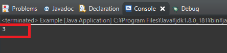
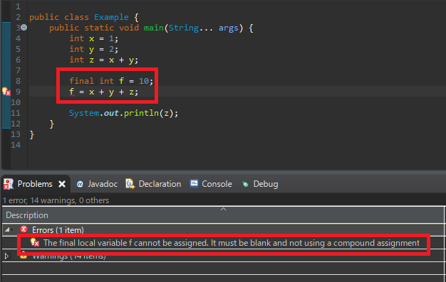

こんにちは。明月です。
変数と定数に関してはすべてのLanguageと差異が多くないです。それでJavaだって別に他のLanguageと違うことではありません。
プログラムは小さい単位でみれば一つの計算機と同じです。単純に値を加算するし、減算、乗算、除算の計算式ですね。
それでプログラムで計算する時には数学の方程式だとおもったらよいです。例えば、x+y=zの式があり、ユーザからxの値は1yの値は2で入力されたら結果はZは3になりますという計算式ですね。
ここで我々が考えられることなら「+」、「=」は演算子で、「x」、「y」、「z」は変数になります。それを変数の値をメモリに格納して計算することです。
public class Example {
public static void main(String... args) {
// xの変数に1を入れる
int x = 1;
// yの変数に2を入れる
int y = 2;
// zの値はx+yになる。
int z = x + y;
//結果は 3になります。
System.out.println(z);
}
}

上の例はEclipseでJavaプログラムを初めに生成する時の構造になります。基本的にpublic static void mainをクラスの中で探して実行することになります。
上の例を見ると「int z = x + y」があります。基本的に数学では「x + y = z」の形式ですがプログラムはイコールが前にあります。
その文法で計算すると「z」の値は「x」の「1」と「y」の「2」が加算して「3」になります。
結果は出力関数の「System.out.println」を利用して出力します。
定数に関して説明します。
プログラム上の形は差異がたくさんあることではなく、ただデータを変更できるかできないかの差だけです。定数の場合は変数宣言したところの前にfinalのキーワードを入れて後から変更ができないようにすることです。
この定数のデータは実務でマスターデータとして変更ないデータで職別データのため、またクラスの概念だと割り当てを固定にすることになります。

上の例で私が「f」の定数を宣言して「x + y + z」の値をまた入れようとしましたが、Eclipse側でソースレベルでエラーが発生しました。
この変数と定数はプログラムを作成する時、すごくよく使う概念です。
- [Javaスタディ- 52] Java servletでインスタンスを初期する方法2019/10/17 07:15:48
- [Javaスタディ- 51] Spring web frameworkで発生する文字化けのEncoding設定2019/10/16 07:32:55
- [Javaスタディ- 50] Web Spring frameworkでfilter設定2019/10/15 20:12:35
- [Javaスタディ- 49] Web serviceのweb.xmlでエラーページ設定2019/10/14 20:13:44
- [Javaスタディ- 48] JPAのDAOをFactoryパターンで管理する方法2019/10/13 22:55:52
- [Java スタディ - 47] JPAのSpring frameworkで依存性注入する方法2019/10/13 00:40:08
- [Java スタディ - 46] JPAでDAOを生成する方法2019/10/11 07:30:14
- [Java スタディ - 45] JPAでトランザクションの使用方法とオブサーバーパターンで共通トランザクション関数を作り方2019/10/10 07:29:43
- [Java スタディ - 44] JPAのQuery を作り方2019/10/09 07:34:08
- [Java スタディ - 43] JPAのEntityクラス設定(Cascade, fetch)2019/10/08 07:43:33
- [Java スタディ - 42] JPAでpersistance.xml設定とentityクラス設定(@GeneratedValue設定)2019/10/07 07:38:13
- [Java スタディ - 41] EclipseでJPAフレームワーク設定する方法2019/10/04 19:24:43
- [Java スタディ - 40] Web spring frameworkのJSPで使う言語 JSTL - XML2019/10/03 20:02:06
- [Java スタディ - 39] Web spring frameworkのJSPで使う言語 JSTL - 関数、データベース2019/10/02 21:00:22
- [Java スタディ - 38] Web spring frameworkのJSPで使う言語 JSTL - コアー、フォーマッティング2019/10/01 21:48:08
- [PHP] 配列とリスト(list)2020/01/14 03:00:00
- [PHP] インタフェースと抽象クラス、クラス継承、parent、this2020/01/13 03:00:00
- [PHP] functionとclass使用方法、アクセス修飾子、そしてstatic2020/01/09 23:35:27
- [PHP] 基本ページ作成方法と変数使用方法2020/01/06 23:44:20
- [PHP] Composer設定2019/12/27 08:49:09
- [PHP] PHP 開発環境設定とEclipse(IDE)の設定2019/12/26 07:36:47
- [CSS] ブラウザから開発する方法 (developer mode)2019/12/25 07:54:31
- [CSS] 色スタイル、グラデーション2019/12/24 07:37:22
- [CSS] アニメーション (animation)2019/12/20 20:51:38
- [CSS] トランスフォーム (transform)2019/12/19 13:00:26
- [CSS] トランジション(transition)2019/12/18 20:33:57
- [CSS] Columnスタイル2019/12/17 19:52:56
- [CSS] 整列スタイル (float)2019/12/17 00:08:54
- [CSS] 位置(position),表示(display)スタイル2019/12/13 20:08:50
- [CSS] border(枠)、余白スタイル - border, margin, padding2019/12/12 20:16:43